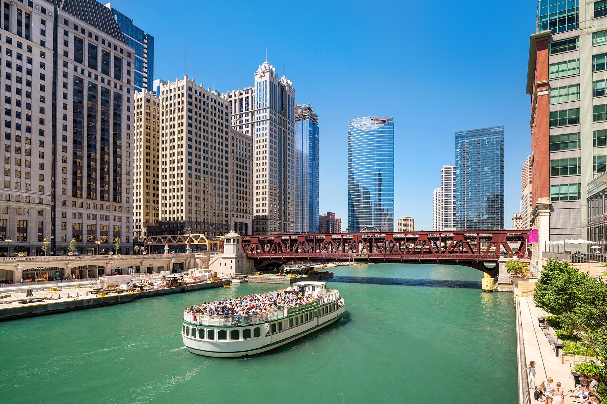
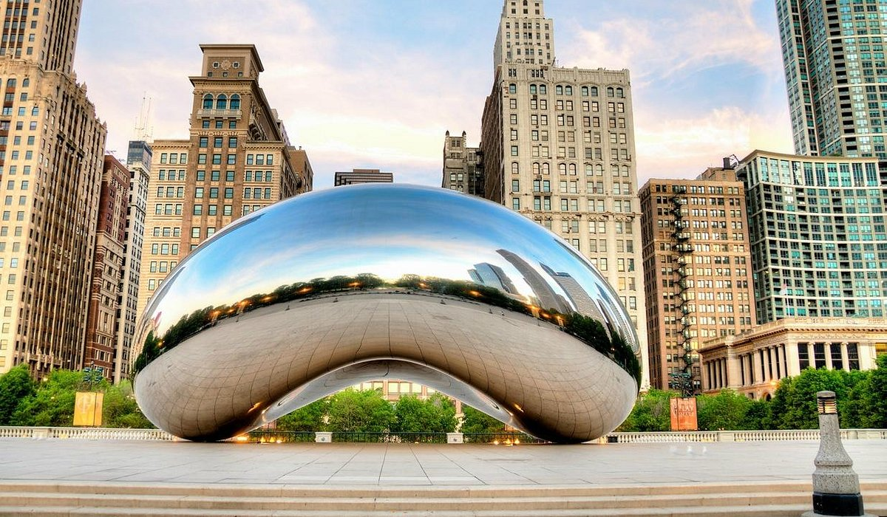
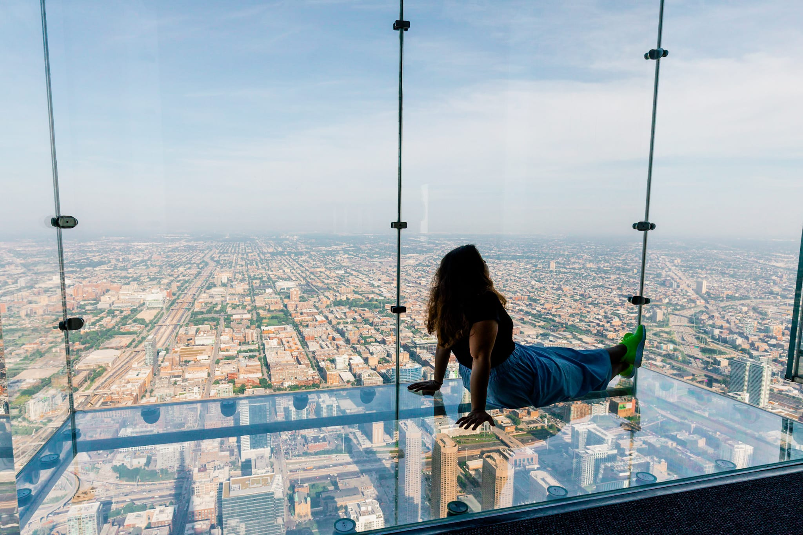

Top 3 Tourist Attractions
The Architecture Boat Tours
Chicago’s architecture tours are one of the best ways to experience the city, offering a close-up look at iconic skyscrapers and historic buildings along the Chicago River. Guided by expert docents, these tours highlight how Chicago shaped modern architecture through innovation, design, and resilience.
"The Bean" (Cloud Gate)
The Bean, officially known as Cloud Gate, is one of Chicago’s most recognizable landmarks. Its mirrored surface reflects the skyline and the people around it, making it a favorite spot for photos and a must-see in Millennium Park.
Skydeck Ledge at Willis Tower
The Skydeck Ledge at Willis Tower lets visitors step out onto a glass floor 103 stories above the city. With breathtaking views straight down to the streets below, it's an unforgettable way to experience Chicago from above.
